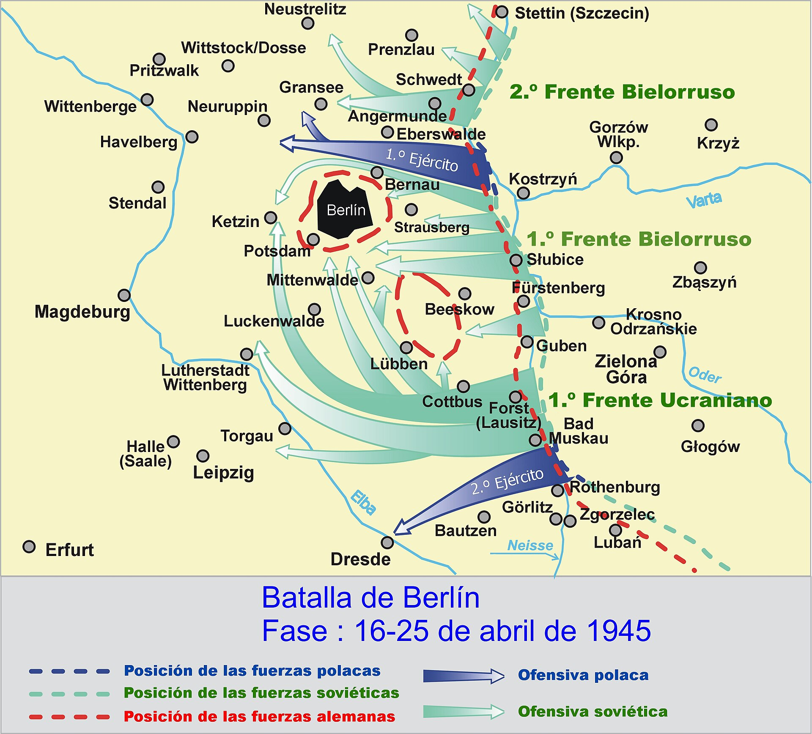

Batalla de Berlín
La ofensiva soviética final sobre la capital del Reich, que puso fin a la guerra en Europa y al régimen nazi.
Datos
| Fechas | 16 de abril – 2 de mayo de 1945 |
|---|---|
| Lugar | Berlín y sus alrededores, Alemania |
| Resultado | Victoria soviética decisiva; caída de Berlín y fin del Tercer Reich |
| Bando atacante | Unión Soviética, con fuerzas polacas |
| Defensor | Alemania |
| Comandantes | Gueorgui Zhúkov, Iván Kónev, Konstantín Rokossovski (URSS); Helmuth Weidling (Alemania) |
| Consecuencia directa | Suicidio de Hitler (30 de abril) y capitulación de Alemania (8 de mayo de 1945) |
Bando atacante
1.º Ejército Polaco
Defensor
Últimas defensas
Introducción
En la primavera de 1945, con el Reich al borde del colapso, el Ejército Rojo lanzó su ofensiva final contra la capital alemana. Millones de soldados soviéticos convergieron sobre una Berlín defendida por tropas exhaustas, ancianos y niños del Volkssturm. La batalla por la ciudad fue el último acto de la guerra en Europa.
Razones
- El golpe final: tomar Berlín significaba destruir el corazón político del régimen nazi y acabar la guerra.
- Valor simbólico: Stalin quería que fuera el Ejército Rojo, y no los aliados occidentales, quien capturara la capital del Reich.
- Posición de posguerra: controlar Berlín reforzaba la posición soviética en el reparto de la Europa de posguerra.
Cuerpo (desarrollo)
La ofensiva comenzó el 16 de abril con el asalto a las Alturas de Seelow, la última gran línea defensiva ante Berlín, donde los soviéticos sufrieron numerosas bajas. Rotas las defensas, los frentes de Zhúkov y Kónev rodearon la ciudad y penetraron en ella.
Siguió una brutal lucha calle por calle, casa por casa, hacia el centro. El 30 de abril, con los soviéticos a pocas manzanas, Hitler se suicidó en su búnker. Ese mismo día, soldados soviéticos izaron la bandera sobre el Reichstag, imagen que se convirtió en símbolo de la victoria. La guarnición de Berlín capituló el 2 de mayo.

Mapa de la Batalla de Berlín en español (Wikimedia Commons): el avance de los frentes soviéticos, el cerco de la ciudad y el asalto final.
Conclusión
La caída de Berlín marcó el fin del Tercer Reich y de la guerra en Europa.
- Alemania capituló sin condiciones el 8 de mayo de 1945 (Día de la Victoria en Europa).
- La ciudad quedó devastada y fue dividida en zonas de ocupación, germen de la futura Guerra Fría.
- El coste humano de la batalla fue enorme para ambos bandos y para la población civil.
Curiosidades
- La bandera sobre el Reichstag: la célebre fotografía fue en parte reconstruida después del combate; se retocó para eliminar detalles comprometedores.
- El Volkssturm: en la defensa final participaron milicianos muy jóvenes y ancianos, mal armados, movilizados a la desesperada.
- La carrera por Berlín: Stalin enfrentó deliberadamente a los mariscales Zhúkov y Kónev para que compitieran por ser los primeros en tomar la ciudad.
Teorías
Debates e interpretaciones historiográficas, presentados como tales:
- ¿Por qué no tomaron Berlín los aliados occidentales? Se debate la decisión de Eisenhower de detenerse en el Elba y dejar Berlín a los soviéticos, por motivos militares y políticos.
- El coste de Seelow: se discute si la prisa de Zhúkov por tomar las alturas rápidamente causó bajas soviéticas innecesarias.